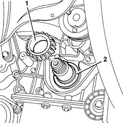
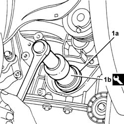
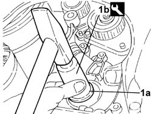
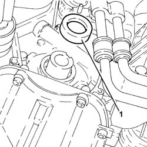
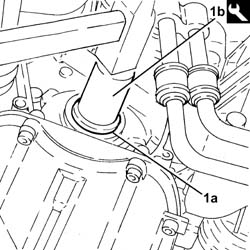
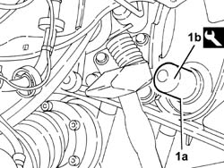
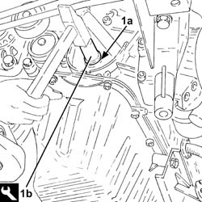

1020D18 front crank shaft cover oil seal - replace
- Path
- Procedures > 10 ENGINE > 1020 CRANKCASE SUMP AND COVERS > 1020D oil seals on crank shaft > 1020D18 front crank shaft cover oil seal - replace
- Kind
- repair procedure (removal / refitting; the operation number is the code)
- Applies to
- engines: 1.6 TS , 1.8 TS, 2.0 JTS, 2.5 V6, 3.2 V6, 1.9 JTD 8v , 1.9 JTD 16v, 2.0 JTS, 2.4 JTD 10v; all production periods
- Interactive page
- https://sloeber94.github.io/elrnDB-a156/en/#/3237474
Applies to: engines: 2.5 V6, 3.2 V6; all production periods
 Removing
Removing
 Refitting
Refitting4450B10 Front WHEEL (one) - R.R.
7055B64 Engine compartment DUST shield in front wheel arch (one), left or right - R.R.
1092G10 single engine belt r r
1032D12 timing system protective cover(s) - r + r
1. Remove the toothed drive pulley.
Remove the key using a flat drift.
2. Remove the oil seal from the crankshaft front cover.

Applies to: engines: 2.5 V6, 3.2 V6; all production periods
Refitting
Removing1. Fit a new oil seal (1a) using the tool (1b).
 | Name | Country |
|---|---|---|
1b | Fitting tool | 1.860.949.000 |

Applies to: engines: 2.5 V6, 3.2 V6; all production periods
Fit the key.
Fit the toothed drive pulley.
Carry out op. 1016A42 left hand cylinder head ignition coil cover - r+r
Carry out op. 1072B50 sleeves connecting air capacity box to inlet manifold is - r+r
Carry out op. 5510C14 ignition coil/s - r+r
Carry out op. 1016A36 left hand and right hand cam cover - r+r
1016A36 left hand and right hand cam cover - r+r
1072B50 sleeves connecting air capacity box to inlet manifold is - r+r
1016A42 left hand cylinder head ignition coil cover - r+r
1032D12 timing system protective cover(s) - r + r
1092G10 single engine belt r r
7055B64 Engine compartment DUST shield in front wheel arch (one), left or right - R.R.
Applies to: engines: 1.6 TS , 1.8 TS; all production periods
Removing
RefittingPosition the vehicle on the ramp.
4450B10 Front WHEEL (one) - R.R.
7055B64 Engine compartment DUST shield in front wheel arch (one), left or right - R.R.
7055B54 under-engine guard - r r
Undo the engine oil drain plug and drain the oil.
1016A40 ignition coil cover on cylinder head- r+r
1016A20 single cam cover - r + r and replace gasket
1092G10 single engine belt r r
1092G20 engine component single belt fixed tensioner - one - r + r
1092A12 crankshaft pulley - r+r for versions with air conditioner
Applies to: all engines; all production periods
1092E10 counter-rotating shaft drive toothed belt - r + r
1092E20 counter-rotating shaft drive toothed belts drive pulley - r + r with toothed belt removed
Applies to: engines: 1.6 TS , 1.8 TS; all production periods
1032B47 toothed drive pulley - r r for versions with air conditioner
Release the crankshaft front cover oil seal using a screwdriver and remove it.
Applies to: engines: 1.6 TS , 1.8 TS; all production periods
Refitting
Removing1. Fit a new crankshaft front cover oil seal (1a) using the tool (1b).
| Name | Country |
|---|---|---|
1b | Fitting tool | 1.821.247.000 |

Applies to: engines: 1.6 TS , 1.8 TS; all production periods
1032B47 toothed drive pulley - r r for versions with air conditioner
Applies to: all engines; all production periods
1092E20 counter-rotating shaft drive toothed belts drive pulley - r + r with toothed belt removed
Applies to: engines: 1.6 TS , 1.8 TS; all production periods
1032D12 timing system protective cover(s) - r + r
1092A12 crankshaft pulley - r+r for versions with air conditioner
1092G20 engine component single belt fixed tensioner - one - r + r
1092G10 single engine belt r r
1016A20 single cam cover - r + r and replace gasket
1016A40 ignition coil cover on cylinder head- r+r
Tighten the engine oil drain plug to the recommended torque.
 | Fastening | Component | Ø | Value (daNm) |
|---|---|---|---|---|
- | Plug | ENGINE OIL DRAIN PLUG | M18 | 1.7 - 2.1 |
7055B54 under-engine guard - r r
7055B64 Engine compartment DUST shield in front wheel arch (one), left or right - R.R.
4450B10 Front WHEEL (one) - R.R.
Refill the engine lubrication circuit using the recommended oil.
 | Type | Component | Name | Qty. |
|---|---|---|---|---|
- | Oli [l] | ENGINE LUBRICATION CIRCUIT | SELENIA 20K | 4.4 |
If the vehicle is subject to particulary sporty usage, use the recommended oil for the engine lubrication circuit.
| Type | Component | Name | Qty. |
|---|---|---|---|---|
- | Oli [l] | ENGINE LUBRICATION CIRCUIT | SELENIA RACING | 4.4 |
For the optimum operation of the engine in particularly harsh climatic conditions (temperatures below -20 degrees C), use the recommended oil for the engine lubrication circuit.
| Type | Component | Name | Qty. |
|---|---|---|---|---|
- | Oli [l] | ENGINE LUBRICATION CIRCUIT | SELENIA PERFORMER | 4.4 |
Remove the car from the ramps.
Applies to: engines: 2.0 JTS, 2.0 JTS; all production periods
Removing
RefittingPosition the vehicle on the ramp.
Ensure that the ignition key is in the OFF postition, then disconnect the battery negative terminal.
 | Name | Connector |
|---|---|---|
- | Battery |
Proceed with the removal 4450B04 right front wheel r r .
Proceed with the removal 7055B54 under-engine guard - r r .
Proceed with the removal 1016A40 ignition coil cover on cylinder head- r+r .
Proceed with the removal 1032B10 toothed timing belt - r + r for timing adjustment or replacement .
Proceed with the removal 1032B46 toothed drive pulley - r + r .
Remove the key from the crankshaft using a suitable tool.
1. Remove the crankshaft front cover oil seal.

Applies to: engines: 2.0 JTS, 2.0 JTS; all production periods
Refitting
Removing1. Fit a new crankshaft front oil seal (1a) using he tool (1b).
| Name | Country |
|---|---|---|
1b | Fitting tool | 1.821.147.000 |

Applies to: engines: 2.0 JTS, 2.0 JTS; all production periods
Place the key back in its housing in the crankshaft.
Proceed with the refitting 1032B46 toothed drive pulley - r + r .
Proceed with the refitting 1032B10 toothed timing belt - r + r for timing adjustment or replacement .
Proceed with the refitting 1016A40 ignition coil cover on cylinder head- r+r .
Proceed with the refitting 7055B54 under-engine guard - r r .
Proceed with the refitting 4450B04 right front wheel r r .
Connect the battery terminal (-).
Remove the car from the ramp.
Applies to: engines: 1.9 JTD 8v , 2.4 JTD 10v; all production periods
Removing
Refitting4450B10 Front WHEEL (one) - R.R.
7055B64 Engine compartment DUST shield in front wheel arch (one), left or right - R.R.
1092G10 single engine belt r r
1092A12 crankshaft pulley - r+r for versions with air conditioner
1032D12 timing system protective cover(s) - r + r
1008C10 power unit upper reaction link r r .
1016A10 sound-proofing cover - r + r .
1008C14 engine link bracket - r r
1032B44 toothed drive pulley - r + r with timing belt removed
1032B47 toothed drive pulley - r r for versions with air conditioner
Remove the crankshaft front cover oil seal.
Applies to: engines: 1.9 JTD 8v , 2.4 JTD 10v; all production periods
Refitting
Removing1. Fit a new crankshaft front cover oil seal (1a) using the tool (1b).
| Name | Country |
|---|---|---|
1b | Fitting tool | 1.821.247.000 |

Applies to: engines: 1.9 JTD 8v , 2.4 JTD 10v; all production periods
1032B47 toothed drive pulley - r r for versions with air conditioner
1032B44 toothed drive pulley - r + r with timing belt removed
1008C14 engine link bracket - r r
1016A10 sound-proofing cover - r + r .
1008C10 power unit upper reaction link r r .
1032D12 timing system protective cover(s) - r + r
1092A12 crankshaft pulley - r+r for versions with air conditioner
1092G10 single engine belt r r
7055B64 Engine compartment DUST shield in front wheel arch (one), left or right - R.R.
Applies to: engines: 1.9 JTD 16v; all production periods
Removing
RefittingPosition the vehicle on the ramp.
Proceed with removal 1016A10 sound-proofing cover - r + r .
Ensure that the ignition key is in the OFF position, then disconnect the negative battery terminal (-).
| Name | Connector |
|---|---|---|
- | Battery |
Proceed with removal 1008C10 power unit upper reaction link r r .
Proceed with removal 1060G80 ds electric injection control unit - r r .
Proceed with removal 4450B04 right front wheel r r .
Proceed with removal 7055B54 under-engine guard - r r .
Proceed with removal - 7055B91 Right front WHEEL ARCH LINER - R.R. .
Proceed with removal 1092G10 single engine belt r r .
Proceed with removal 1092A10 Crankshaft services PULLEY - R.R. .
Proceed with removal 1092G20 engine component single belt fixed tensioner - one - r + r .
Proceed with removal 1032D12 timing system protective cover(s) - r + r .
Proceed with removal 1032B10 toothed timing belt - r + r for timing adjustment or replacement .
Proceed with removal 1032B44 toothed drive pulley - r + r with timing belt removed .
Remove the crankshaft front cover oil seal.
Applies to: engines: 1.9 JTD 16v; all production periods
Refitting
Removing1. Refit a new front crankshaft front cover oil seal (1a) using tool (1b).
| Name | Country |
|---|---|---|
1b | Fitting tool | 1.821.247.000 |

Applies to: engines: 1.9 JTD 16v; all production periods
Proceed with refitting 1032B44 toothed drive pulley - r + r with timing belt removed .
Proceed with refitting 1032B10 toothed timing belt - r + r for timing adjustment or replacement .
Proceed with refitting 1032D12 timing system protective cover(s) - r + r .
Proceed with refitting 1092G20 engine component single belt fixed tensioner - one - r + r .
Proceed with refitting 1092A10 Crankshaft services PULLEY - R.R. .
Proceed with refitting 1092G10 single engine belt r r .
Proceed with refitting - 7055B91 Right front WHEEL ARCH LINER - R.R. .
Proceed with refitting 7055B54 under-engine guard - r r .
Proceed with refitting 4450B04 right front wheel r r .
Proceed with refitting 1060G80 ds electric injection control unit - r r .
Proceed with refitting 1008C10 power unit upper reaction link r r .
Connect the negative (-) battery terminal.
Proceed with refitting 1016A10 sound-proofing cover - r + r .
Remove the car from the ramps.
Topics linked from this page (27)
- 1008C10 power unit upper reaction link r r
- 1008C14 engine link bracket - r r
- 1016A10 sound-proofing cover - r + r
- 1016A20 single cam cover - r + r and replace gasket
- 1016A36 left hand and right hand cam cover - r+r
- 1016A40 ignition coil cover on cylinder head- r+r
- 1016A42 left hand cylinder head ignition coil cover - r+r
- 1032B10 toothed timing belt - r + r for timing adjustment or replacement
- 1032B14 toothed timing belt - r + r for timing adjustment or replacement versions with air conditioner
- 1032B44 toothed drive pulley - r + r with timing belt removed
- 1032B46 toothed drive pulley - r + r
- 1032B47 toothed drive pulley - r r for versions with air conditioner
- 1032D12 timing system protective cover(s) - r + r
- 1060G80 ds electric injection control unit - r r
- 1072B50 sleeves connecting air capacity box to inlet manifold is - r+r
- 1092A10 Crankshaft services PULLEY - R.R.
- 1092A12 crankshaft pulley - r+r for versions with air conditioner
- 1092E10 counter-rotating shaft drive toothed belt - r + r
- 1092E20 counter-rotating shaft drive toothed belts drive pulley - r + r with toothed belt removed
- 1092G10 single engine belt r r
- 1092G20 engine component single belt fixed tensioner - one - r + r
- 4450B04 right front wheel r r
- 4450B10 Front WHEEL (one) - R.R.
- 5510C14 ignition coil/s - r+r
- 7055B54 under-engine guard - r r
- 7055B64 Engine compartment DUST shield in front wheel arch (one), left or right - R.R.
- A1B Battery ( BATTERY NEGATIVE )